Colorpoop
Colorpoop exists to unleash weird, raw creativity into the world. One stupid drawing at a time.
It is a world before it is a brand: stories told through comics, animation and illustration, and product drops that let you step in and go deeper.

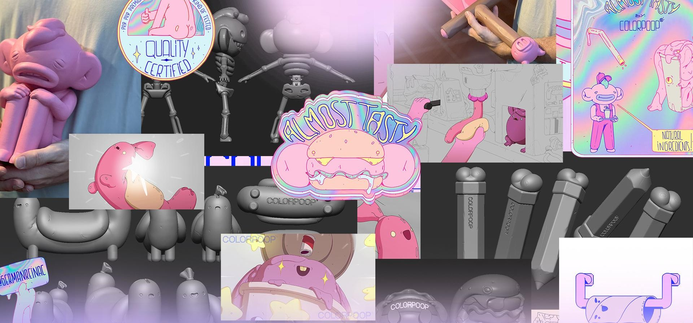
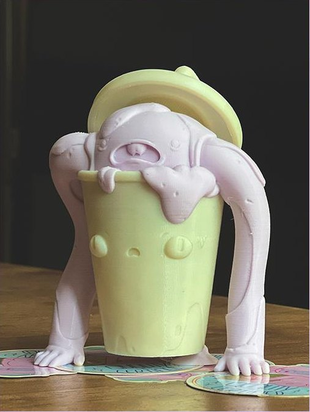
Stay Creative, Stay Weird.
Deadly Serious Art·©2026
Stories
Comic / Animation / Illustration. The storytelling keeps expanding, with more characters, more designs, and ads that add to the worldbuilding instead of interrupting it.
In a dull world don’t let anyone hush your weirdness. Trust your insides. Put yourself out there.
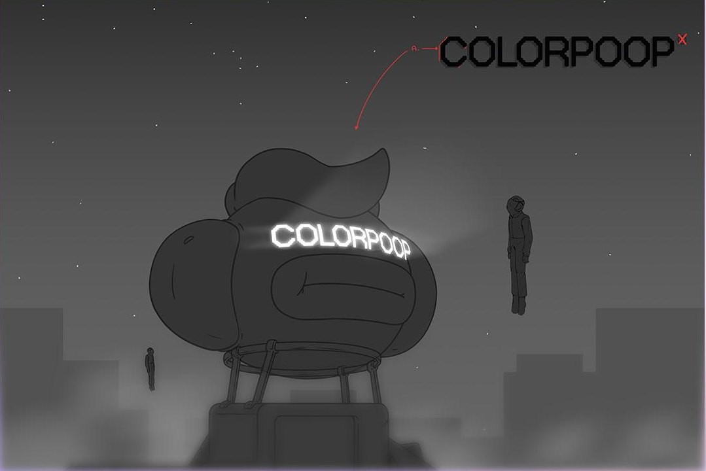


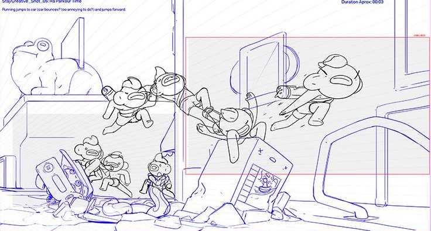


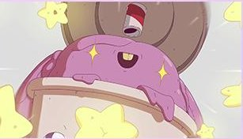
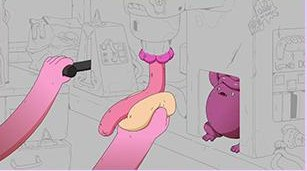

Stay Creative, Stay Weird·Deadly Serious Art·©2026
Goods
Product drops are the way in: things you can wear, hold and hang that carry a piece of the world with them.
- Clothing_
- Art Toys_
- Prints_
And now and then a few bold, unique items, almost like gallery pieces, to sit alongside the more accessible products.

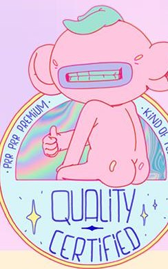
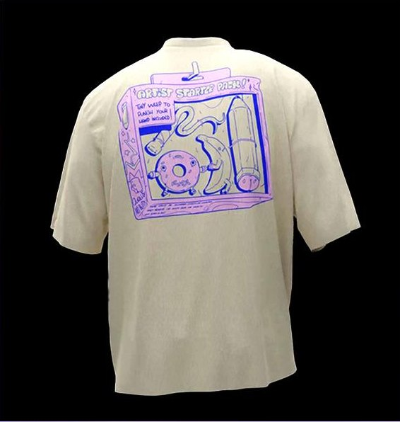
Stay Creative, Stay Weird·Deadly Serious Art·©2026
Drop I
Stay Creative_ This drop is about the core value of the brand: people who forget about their creative selves as they grow up.
The contrast between corporate, “real world” stuff and creativity and playful art. Support your inner artist, wear Colorpoop.
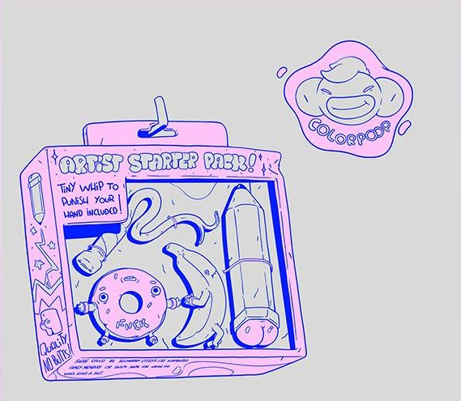
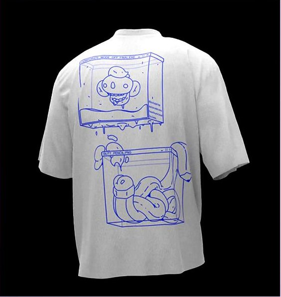


Don’t give up, stay creative.
Stay Creative, Stay Weird·Deadly Serious Art·©2026
Ra
Meet Ra. Pink, big-eared, usually in underwear, and the face of Colorpoop.
Pop pop premium. Kind of tested. Quality certified.
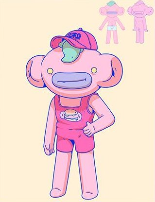


Stay Creative, Stay Weird·Deadly Serious Art·©2026
Shop
Not open yet. Drop I_ Stay Creative is on its way: three tees for people who forgot about their creative selves as they grew up.
Get on the list. One email when the drop goes live, nothing else.
Later: art toys and prints.
Stay Creative, Stay Weird·Deadly Serious Art·©2026